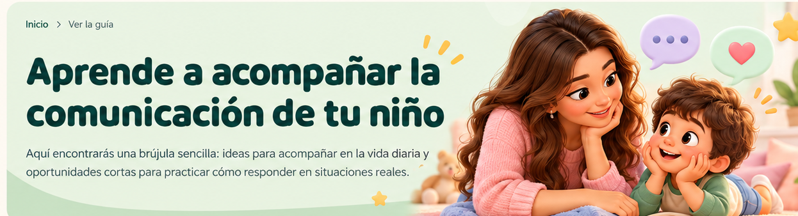
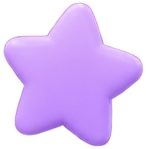
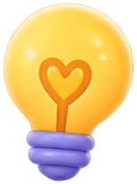
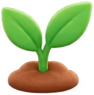

Aprende a acompañar la comunicación de tu niño
Aquí encontrarás una brújula sencilla: ideas para acompañar en la vida diaria y oportunidades cortas para practicar cómo responder en situaciones reales.
Cómo usar esta guía

No necesitas seguir un orden rígido. Puedes empezar por una idea que te resuene, probarla unos días y volver cuando quieras. El objetivo no es “hacerlo perfecto”, sino encontrar pequeños gestos que abran más conversación en casa.
-

Ideas que acompañan: gestos concretos para el día a día.
-

Cada día, una oportunidad: situaciones reales para decidir y practicar.
-
Actividades: propuestas cortas ligadas a momentos cotidianos.